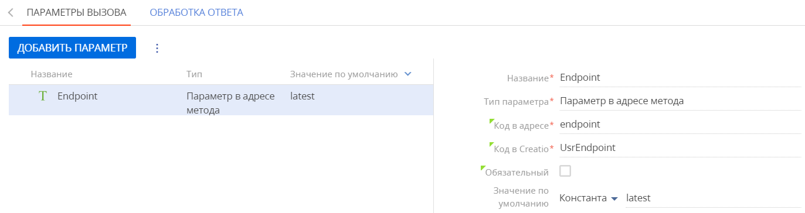
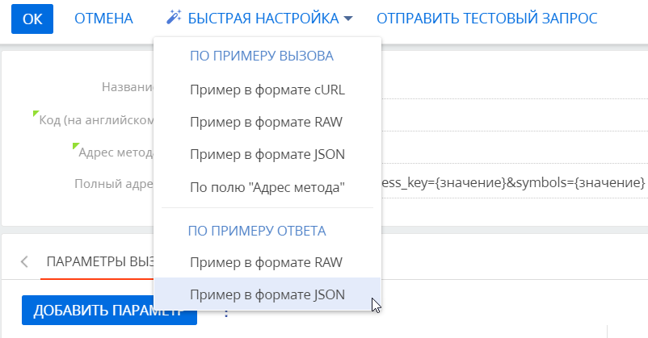

Creatio поддерживает интеграцию с пользовательскими REST-сервисами с помощью инструментов low-code. Creatio сгенерирует и отправит запрос веб-сервису, получит ответ и предоставит необходимые данные. Данные, полученные от веб-сервиса, можно использовать для создания или обновления записей в Creatio, а также для реализации пользовательской бизнес-логики или автоматизации.
Общая последовательность настройки одинакова для всех REST-сервисов, а детали во многом зависят от специфики веб-сервиса.
Этапы настройки интеграции с веб-сервисом:
- Добавление веб-сервиса и настройка его свойств и методов.
- Настройка аутентификации веб-сервиса (опциональный шаг). Настройка аутентификации идентична для REST и SOAP-сервисов.
- Проверка настройки интеграции с веб-сервисом.
После этого можно использовать интеграцию с веб-сервисом в пользовательских бизнес-процессах. Например, можно настроить интеграцию с веб-сервисом “Fixer”, чтобы данные в справочнике Валюты обновлялись в рамках бизнес-процесса. Подробнее данный пример описан в статье Использовать интеграцию с веб-сервисами для автоматического обновления курсов валют.
В этом примере необходимо реализовать поддержку следующих параметров:
- “endpoint” — параметр в адресе метода. Возвращает фактические значения курса валют в режиме реального времени.
- “access_key” — параметр запроса. В него необходимо передать ключ доступа к сервису.
- “symbols” — параметр запроса. В него необходимо передать коды валют. Допускается использование нескольких кодов, указанных через запятую.
- “$.base” — параметр ответа. Содержит значение базовой валюты, в отношении которой были рассчитаны курсы валют. Базовой валютой является евро.
- “$.date” — параметр ответа. Содержит информацию о дате актуальности курсов валют.
- “rates” — параметр ответа. Содержит коллекцию курсов обмена валют по отношению к базовой валюте (каждый курс обмена представлен отдельным параметром, название которого соответствует коду валюты).
Настроить свойства и методы веб-сервиса
Перед началом работы с REST-сервисом “Fixer” необходимо зарегистрироваться на сайте https://fixer.io/ и получить API ключ для доступа к сервису.
Creatio предоставляет возможность настроить свойства и методы веб-сервиса автоматически или вручную.
Автоматическая настройка свойств и методов веб-сервиса
- Перейдите в рабочее место Студия и откройте раздел Веб-сервисы.
- Нажмите Добавить веб-сервис —> REST сервис.
- Укажите адрес веб-сервиса и нажмите ОК (Рис. 1).
Рис. 1 — Автоматическая настройка методов веб-сервиса
Ручная настройка свойств и методов веб-сервиса
- Перейдите в рабочее место Студия и откройте раздел Веб-сервисы.
- Нажмите Добавить веб-сервис —> REST сервис.
- Заполните поля страницы свойств веб-сервиса (Рис. 2).
Поле Комментарий Пример Название Название будет отображаться в поле Какой сервис вызывать? области свойств элемента процесса Вызвать веб-сервис. Курсы обмена валют (Fixer) Код Используется разработчиками для взаимодействия с веб-сервисом в программном коде Creatio. В данном случае уникальное имя интеграции с веб-сервисом состоит из его названия и префикса “Usr”. Usr Fixer URI сервиса Полный адрес вызова веб-сервиса будет состоять из этого URI и настроек, указанных на странице настройки метода.
Используйте такой же протокол (http/https), как и у сайта вашего приложения Creatio.
Если веб-сервис содержится в недоступном для редактирования пакете, то его URI будет доступен для редактирования.http:// data.fixer.io Повторов вызова при ошибках Если ответ от веб-сервиса пришел с кодом ошибки или истек тайм-аут ответа, то запрос будет повторен указанное количество раз. При заполнении этого поля учитывайте тайм-аут ответа, который будет указан для методов веб-сервиса. 10 Тип Тип веб-сервиса. Значение по умолчанию — REST Пакет Пакет, в котором будет сохранена данная интеграция с веб-сервисом. В списке отображаются пакеты, которые доступны для изменения текущим пользователем. RestWeb ServicePackage Рис. 2 — Заполнение страницы свойств веб-сервиса
Для каждого веб-сервиса необходимо настроить вызов методов. При этом для одного веб-сервиса можно настроить несколько методов.
- На детали Методы страницы настройки интеграции с веб-сервисом при помощи кнопки добавьте методы.
- Изучите документацию веб-сервиса и заполните свойства метода (Рис. 3).
Поле Комментарий Пример Название Название будет отображаться в поле Какой сервис вызывать? области свойств элемента процесса Вызвать веб-сервис. Получить курсы обмена Код (на английском) Используется разработчиками для взаимодействия с веб-сервисом в программном коде Creatio. В данном случае уникальное имя интеграции с веб-сервисом состоит из его названия и префикса “Usr”. UsrLatest Адрес метода Для определения данного значения используется документация веб-сервиса.
Вы можете указать статическое значение либо использовать “Параметры в адресе метода” в качестве “переменных” для формирования динамического адреса метода, который будет зависеть от свойств конкретного элемента процесса Вызвать веб-сервис. Например, у веб-сервиса “Fixer” есть конечная точка “latest”, которая возвращает актуальные курсы валют.
Для более гибкой интеграции можно передать конечную точку в качестве параметра адреса метода, указав имя параметра в фигурных скобках. В данном примере мы используем переменную “{endpoint}”. Можно использовать несколько переменных, например: “{parameter1}/
{parameter2}”. /{endpoint}? access_key= 6f****************************53 &symbols= USD,GBP,UAH,RUB Полный адрес Полный адрес генерируется автоматически. Он состоит из URI веб-сервиса и адреса метода с указанием параметров и значений параметров. Используется формат “?paramCode1=
value1& paramCode2= value2”. Полный адрес отображается для проверки настроек метода.
Структура адреса: "Web service URI" + "Адрес метода" + "?" + "Параметры вызова, разделенные символом &". Например: http://
data.fixer.io/ latest? access_key= ********************************& symbols= GBP. Параметр “access_key” используется для указания ключа доступа к веб-сервису.
Параметр “symbols” используется для указания валют, курсы обмена которых следует вернуть. Например, для получения курсов обмена доллара США и британского фунта используется следующий запрос: https://data.fixer.io/latest?symbols=USD,GBP. Если параметр “symbols” не был передан в запросе, то будут возвращены курсы обмена всех валют, поддерживаемых веб-сервисом.
http:// data.fixer.io/ api/ {endpoint}? access_key= 6f****************************53 &symbols= USD,GBP,UAH,RUB Тип запроса Тип HTTP-метода, используемый в запросе. Поддерживаются стандартные типы HTTP-методов. Тип запроса, как правило, указан в документации веб-сервиса.
Например, для получения таких данных как курс валют, используются запросы типа GET.
GET Тип содержимого Поддерживается только тип JSON. JSON Тайм-аут ответа, мс Время ожидания ответа от веб-сервиса. Если после отправки запроса не был получен ответ, либо был получен код ошибки, то по истечении этого времени Creatio повторит запрос (если еще остались неиспользованные попытки повторного вызова). По умолчанию — 5000 Использовать аутентификацию Использовать аутентификацию для доступа к веб-сервису. Необходимо настроить аутентификацию на детали Аутентификация страницы настройки интеграции с веб-сервисом. Подробнее: Аутентификация веб-сервиса. По умолчанию — false Рис. 3 — Свойства метода веб-сервиса
Настроить параметры запроса
Параметры запроса можно добавить вручную или импортировать из примеров вызова по кнопке Быстрая настройка, выбрав формат примера (cURL, RAW or JSON) в выпадающем меню. Также параметры вызова можно добавить из поля Адрес метода. В нашем примере для получения актуальных курсов обмена валют можно использовать GET-запрос c конечной точкой “/latest”.
Параметры запроса метода используются для генерации URL-адреса конечной точки, которая будет использоваться Creatio при вызове веб-сервиса.
Количество и типы параметров запроса определяются спецификой веб-сервиса. Вы можете импортировать параметры вызова из примеров или добавить их вручную.
Доступны следующие типы параметров запроса:
| Параметр в адресе метода |
Этот тип параметра используется как переменные для формирования адреса метода запроса. Добавьте названия параметров в адресе метода, заключив их в фигурные скобки в поле Адрес метода. Например: {parameterName1}/{parameterName2}, и т. д. При вызове веб-сервиса эти переменные будут заменены фактическими значениями параметров адреса метода, указанными для соответствующего элемента Вызвать веб-сервис в дизайнере процессов. Например: http://web.service.uri/parameterValue1/parameterValue2. Если в свойствах элемента значение параметра не указано, но поле Значение по умолчанию параметра заполнено, то будет отправлено значение по умолчанию. Для этого типа параметра признак Обязательный установлен и недоступен для редактирования. |
|---|---|
| Параметр тела |
Этот тип параметра используется для отправки любых типов данных (включая коллекции) в теле запроса. Подробнее о методе POST запроса читайте в Википедии. Параметр недоступен для GET-метода. |
| Параметр запроса | Параметр будет добавлен в запрос после адреса метода и символа “?”. Подробнее о параметре читайте в Википедии (статья на английском языке). |
| Параметр заголовка | Этот тип параметра используется для генерации заголовка запроса. Подробнее об HTTP-заголовках читайте в Википедии. |
| Параметр cookies | Параметры этого типа используются для передачи файлов cookie в запросах к сервису. Например, можно передать полученный ранее cookie для аутентификации. Подробнее о cookie читайте в Википедии. |
Автоматическая настройка параметров запроса
- В правой части поля Адрес метода в правой части поля нажмите кнопку быстрой настройки . Тот же результат можно получить, выбрав опцию По полю “Адрес метода” в меню кнопки Быстрая настройка, расположенной в верхней части окна добавления метода (Рис. 4).
Рис. 4 — Добавление параметров из поля Адрес метода

- Из открывшегося списка параметров выберите те, которые необходимо добавить в запрос, и нажмите Сохранить (Рис. 5).
Рис. 5 — Список параметров адреса метода
В результате выбранные параметры будут добавлены в запрос. Вы можете изменить настройки параметров (например, можно установить признак Обязательный для параметра “Access_key”), чтобы подготовить их для дальнейшего использования на шаге бизнес-процесса Вызвать веб-сервис.
Ручная настройка параметров запроса
- Изучите документацию веб-сервиса.
- Добавьте параметры запроса:
- На вкладке Параметры вызова нажмите кнопку Добавить параметр.
- Добавьте параметр “Endpoint” и заполните его свойства (Рис. 6).
Поле Комментарий Пример Название Название параметра сервиса. Endpoint Тип параметра Тип параметра сервиса. Параметр в адресе метода Код в запросе Код, который используется в запросе. endpoint Код в Creatio Используется разработчиками для взаимодействия с веб-сервисом в программном коде Creatio. В данном случае уникальное имя интеграции с веб-сервисом состоит из его названия и префикса “Usr”. UsrEndpoint Значение по умолчанию Значение параметра по умолчанию. Константа. Значение — “latest” Рис. 6 — Настройка параметра “Endpoint” - Добавьте параметр “API ключ” и заполните его свойства (Рис. 7).
Поле Комментарий Пример Название Название параметра сервиса. API ключ Тип параметра Тип параметра сервиса. Параметр запроса Код в запросе Код, который используется в запросе. access_key Код в Creatio Используется разработчиками для взаимодействия с веб-сервисом в программном коде Creatio. В данном случае уникальное имя интеграции с веб-сервисом состоит из его названия и префикса “Usr”. Usr Access Key Обязательный При установленном признаке параметр будет обязательным в дизайнере процессов. Признак недоступен для редактирования при выборе значения по умолчанию. Признак установлен Значение по умолчанию Значение параметра по умолчанию. Константа Рис. 7 — Настройка параметра “API ключ” - Добавьте параметр “Валюты” и заполните его свойства (Рис. 8).
Поле Комментарий Пример Название Название параметра сервиса. Валюты Тип параметра Тип параметра сервиса. Параметр запроса Код в запросе Код, который используется в запросе. symbols Код в Creatio Используется разработчиками для взаимодействия с веб-сервисом в программном коде Creatio. В данном случае уникальное имя интеграции с веб-сервисом состоит из его названия и префикса “Usr”. Usr Symbols Обязательный При установленном признаке параметр будет обязательным в дизайнере процессов. Признак недоступен для редактирования при выборе значения по умолчанию. По умолчанию признак снят Значение по умолчанию Значение параметра по умолчанию. Константа Рис. 8 — Настройка параметра “Валюты”
В результате Creatio сможет вызывать веб-сервис, используя запросы, автоматически генерируемые бизнес-процессами на основании шаблона:
Значения в фигурных скобках будут определяться значениями параметров запроса, например:
Настроить параметры ответа
Ответ от веб-сервиса может приходить в форматах cURL, RAW, JSON. Для использования данных, полученных в ответе веб-сервиса, необходимо настроить обработку и передачу данных из ответа в параметры обработки ответа. Вы можете добавить параметры ответа автоматически или вручную.
Автоматическая настройка параметров ответа
Если ответ от сервера приходит в формате JSON или RAW, то параметры ответа можно добавить автоматически по кнопке Быстрая настройка.
- Нажмите кнопку Быстрая настройка. В блоке меню “По примеру ответа” выберите Пример в формате JSON (Рис. 9).
Рис. 9 — Настройка параметров ответа по примеру в формате JSON
- Введите JSON-код ответа сервера (Рис. 10). Код отобразится в браузере, если вы попытаетесь перейти по URL-адресу вызова веб-сервиса.
Рис. 10 — Ответ в формате JSON
Нажмите кнопку Далее.
- Откроется список параметров:
- “Success” — указывает, был ли запрос успешным.
- “Timestamp” — объект, содержащий стандартную для UNIX отметку времени, которая указывает на время сбора данных, используемых в работе веб-сервиса.
- “Base” — указывает базовую валюту, по отношению к которой были рассчитаны курсы обмена валют. Например, "base":"EUR" в ответе указывает на то, что курсы валют были рассчитаны по отношению к евро.
- “Date” — содержит дату актуальности возвращенных курсов. Например, "date":"2021-05-26" в ответе указывает на то, что курсы валют были рассчитаны на 26 мая 2021 года.
- “Rates” — содержит массив вложенных параметров, каждый из которых содержит курс обмена определенной валюты по отношению к базовой валюте.
Например, "rates":{"USD":1.222845, "GBP":0.862279, "UAH":33.550002, "RUB":89.876838} в ответе указывает на то, что сервисом были возвращены курсы обмена доллара США ("USD":1.222845), британского фунта ("GBP":0.862279), украинской гривны ("UAH":33.550002) и русского рубля ("RUB":89.876838).
Выберите параметры, которые необходимо добавить в ответ, и нажмите Сохранить (Рис. 11).
Рис. 11 — Список параметров из примера в формате JSON
В результате выбранные параметры будут добавлены в ответ. Вы можете изменить настройки параметров (например, можно изменить тип данных для курса валют на “Дробное число”), чтобы подготовить их для дальнейшего использования.
Ручная настройка параметров ответа
- Изучите документацию веб-сервиса.
- Добавьте параметры обработки ответа:
- На вкладке Обработка ответа нажмите кнопку Добавить параметр.
- Добавьте параметр “Базовая валюта” и заполните его свойства (Рис. 12).
Поле Комментарий Пример Название Название параметра сервиса. Базовая валюта Тип параметра Тип параметра сервиса. Параметр тела Путь к элементу (JSONPath) Значение в формате JSON. Например, JSONPath “$.base” получает значение парамера “base” в ответе от веб-сервиса. $.base Код в Creatio Используется разработчиками для взаимодействия с веб-сервисом в программном коде Creatio. В данном случае уникальное имя интеграции с веб-сервисом состоит из его названия и префикса “Usr”. Usr Base Currency Тип данных Тип данных параметров сервиса. Параметр с вложенными элементами должен иметь тип данных “Объект”. Текст Является массивом Значение параметра-массива нельзя задать в элементе “Вызвать веб-сервис” в дизайнере процессов. Необходимо использовать элемент “Задание-сценарий”. Параметр с типом данных “Объект” обязательно должен быть массивом. По умолчанию признак снят Значение по умолчанию Значение параметра по умолчанию. Константа. Значение — “EUR” Рис. 12 — Настройка параметра обработки “Базовая валюта” - Добавьте параметр “Дата” и укажите его свойства (Рис. 13).
Поле Комментарий Пример Название Название параметра сервиса. Дата Тип параметра Тип параметра сервиса. Параметр тела Путь к элементу (JSONPath) Значение в формате JSON. Например, JSONPath “$.date” получает значение парамера “date” в ответе от веб-сервиса. $.date Код в Creatio Используется разработчиками для взаимодействия с веб-сервисом в программном коде Creatio. В данном случае уникальное имя интеграции с веб-сервисом состоит из его названия и префикса “Usr”. Usr Date Тип данных Тип данных параметров сервиса. Параметр с вложенными элементами должен иметь тип данных “Объект”. Дата Является массивом Значение параметра-массива нельзя задать в элементе “Вызвать веб-сервис” в дизайнере процессов. Необходимо использовать элемент “Задание-сценарий”. Параметр с типом данных “Объект” обязательно должен быть массивом. По умолчанию признак снят Значение по умолчанию Значение параметра по умолчанию. Константа Рис. 13 — Настройка параметра “Дата” - Добавьте параметр “RatesUSD” и заполните его свойства (Рис. 14).
Поле Комментарий Пример Название Название параметра сервиса. Rates USD Тип параметра Тип параметра сервиса. Параметр тела Путь к элементу (JSONPath) Значение в формате JSON. Например, JSONPath “$.rates.USD” получает значение парамера “USD” в ответе от веб-сервиса. $.rates.USD Код в Creatio Используется разработчиками для взаимодействия с веб-сервисом в программном коде Creatio. В данном случае уникальное имя интеграции с веб-сервисом состоит из его названия и префикса “Usr”. Usr Rates USD Тип данных Тип данных параметров сервиса. Параметр с вложенными элементами должен иметь тип данных “Объект”. Дробное число Является массивом Значение параметра-массива нельзя задать в элементе “Вызвать веб-сервис” в дизайнере процессов. Необходимо использовать элемент “Задание-сценарий”. Параметр с типом данных “Объект” обязательно должен быть массивом. По умолчанию признак снят Значение по умолчанию Значение параметра по умолчанию. Константа Рис. 14 — Настройка параметра “Rates USD” - Аналогичным образом настройте параметры обработки ответа для курсов остальных необходимых валют (Рис. 15).
Рис. 15 — Настройка параметров обработки ответа веб-сервиса
- Нажмите кнопку Ок для сохранения настроек.
Настроить параметры запроса и ответа типа “коллекция”
Коллекцией (или массивом) является набор элементов. Creatio может передавать коллекции данных в веб-сервис и обрабатывать его ответы, содержащие коллекции. Если веб-сервис поддерживает получение и/или отправку массивов данных, то параметры типа “коллекция” можно использовать как для вызова веб-сервиса, так и для обработки его ответа.
Типы параметров коллекции:
- Простая коллекция. Любой параметр можно представить в виде коллекции, установив в свойствах параметров признак “Является массивом”. Простые коллекции являются массивами значений одного типа данных. Каждое значение является отдельным элементом коллекции. Например, “1, 2, 3” — это простой массив значений целых чисел, а “Бостон, Нью-Йорк, Чикаго” — простой массив текстовых значений.
- Коллекция объекта. Коллекция представляет собой корневой параметр (т. н. объект), который содержит вложенные параметры. Каждый элемент коллекции объекта может иметь разные типы параметров. Такие параметры элемента коллекции являются вложенными параметрами корневого параметра. Например, коллекция контактов может содержать вложенные параметры для передачи имени контакта, даты рождения и возраста (Рис. 16).
Коллекция такой структуры выглядит так:
| ФИО контакта | Дата рождения | Возраст |
|---|---|---|
| Евгений Мирный | 12.04.1991 | 30 |
| Сергей Авдоров | 10.04.1985 | 36 |
| Ольга Варенская | 12.05.1989 | 31 |
Creatio может передавать коллекции данных в веб-сервис и обрабатывать ответы веб-сервиса, содержащие коллекции. Если веб-сервис поддерживает получение и/или отправку массивов данных, то параметры типа “коллекция” можно использовать как для вызова веб-сервиса, так и для обработки его ответа.
Для настройки коллекции:
- Изучите документацию веб-сервиса.
- Добавьте метод “Получение контактов”.
- Для настройки параметров запроса, который является коллекцией, в поле Тип данных укажите “Объект”. Признак Является массивом будет установлен автоматически (Рис. 17).
В результате параметр ответа веб-сервиса типа “коллекция”, который получает записи контактов с сервера, будет иметь такой вид (Рис. 18).
Параметры ответа веб-сервиса типа “коллекция” могут использоваться в качестве входящих параметров элемента бизнес-процесса Вызвать веб-сервис. Подробнее: Элемент процесса Вызвать веб-сервис.
Проверить настройку интеграции с REST-сервисом
Для дальнейшего использования данных от сервиса в пользовательских бизнес-задачах необходимо проверить настройку интеграции.
Начиная с версии 7.18.0 появилась возможность проверить настройку интеграции с SOAP-сервисом из интерфейса приложения, без создания тестового бизнес-процесса.
Чтобы проверить настройку интеграции с REST-сервисом:
- Перейдите в рабочее место Студия и откройте раздел Веб-сервисы.
- Откройте страницу веб-сервиса, интеграцию с которым необходимо проверить. В нашем примере это “Курсы обмена валют (Fixer)”.
- На детали Методы страницы настройки интеграции с веб-сервисом откройте метод “Получить курсы обмена”.
- На странице настройки метода нажмите Отправить тестовый запрос.
- Задайте значения параметров вызова метода.
Параметр Значение Endpoint latest API ключ 6f****************************53 Валюты USD,GBP,UAH,RUB - Нажмите Отправить запрос (Рис. 19).
В результате выполнения тестового запроса будет получен ответ от веб-сервиса. Значения параметров ответа отображены на вкладке Параметры ответа в соответствующих полях (Рис. 19). Другие вкладки позволяют посмотреть запрос и ответ на запрос на языках JSON и HTTP (формат данных raw).
Если при настройке интеграции с веб-сервисом была допущена ошибка, то в результате тестового запроса будет получен ответ с пустыми значениями параметров. В этом случае проверьте все настройки сервиса и повторите попытку.
После проверки вы можете использовать интеграцию с веб-сервисом в пользовательских бизнес-процессах. Подробнее данный пример описан в статье Использовать интеграцию с веб-сервисами для автоматического обновления курсов валют.
В зависимости от особенностей веб-сервиса, прежде чем он станет доступным для использования, может потребоваться выполнить процедуру аутентификации. Подробнее: Настроить аутентификацию веб-сервиса.